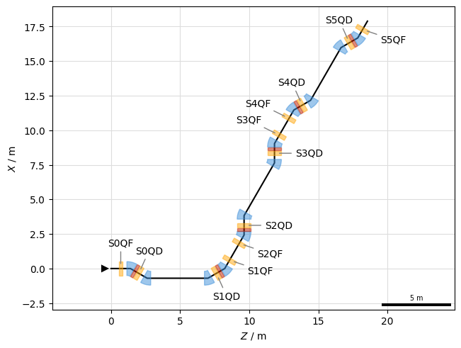
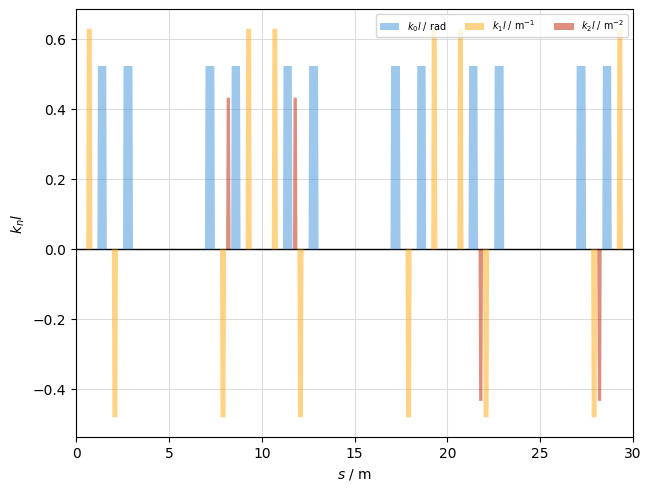

Beamline#
This is an example of plotting lines and surveys. First, create a simple line and a tracker:
Show imports
import xtrack as xt
import xpart as xp
import xplt
import numpy as np
np.random.seed(36963142)
Show line generation code
## Generate a simple 6-fold symmetric FODO lattice
n = 6
elements = []
element_names = []
for i in range(n):
element_names.extend(
[
f"drift{i}1",
f"S{i}QF",
f"drift{i}2",
f"S{i}MUA",
f"drift{i}3",
f"S{i}SX",
f"drift{i}4",
f"S{i}QD",
f"drift{i}5",
f"S{i}MUB",
f"drift{i}6",
][:: -1 if i % 2 else 1]
)
elements.extend(
[
xt.Drift(length=0.7),
xt.Multipole(length=0.3, knl=[0, +0.63], ksl=[0, 0]),
xt.Drift(length=0.7),
xt.Multipole(
length=0.5, knl=[np.pi / n], hxl=[np.random.choice([-1, +1]) * np.pi / n]
),
xt.Drift(length=0.4),
xt.Multipole(length=0.2, knl=[0, 0, 0.5 * np.sin(2 * np.pi * (i / n))]),
xt.Drift(length=0.3),
xt.Multipole(length=0.3, knl=[0, -0.48], ksl=[0, 0]), # -0.4
xt.Drift(length=0.7),
xt.Multipole(
length=0.5, knl=[np.pi / n], hxl=[np.random.choice([-1, +1]) * np.pi / n]
),
xt.Drift(length=2.2),
][:: -1 if i % 2 else 1]
)
elements.append(xt.LimitRect(min_x=-0.01, max_x=0.01, min_y=-np.inf, max_y=np.inf))
element_names.append("APERTURE")
line = xt.Line(elements=elements, element_names=element_names)
line.particle_ref = xp.Particles(mass0=xp.PROTON_MASS_EV, q0=1, p0c=1e9)
tracker = xt.Tracker(line=line)
Survey#
Create a survey for a floor plan:
survey = tracker.survey()
plot = xplt.FloorPlot(survey, line, labels="S.Q.")
plot.add_scale()

Multipole strength#
A plot of the multipole strength $k_nl$ as function of s-coordinate:
plot = xplt.KnlPlot(line)

See also